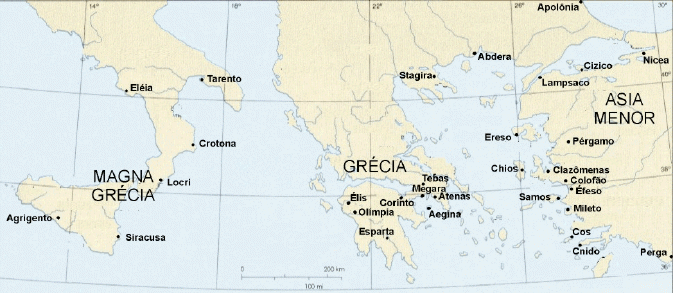

Ceos é uma ilha grega no mar Egeu com 910 km², famosa pela sua paisagem e clima, cuja capital é Khíos. A sua exportação principal é resina de lentisco, mas também produz azeitonas, figos e vinho. Nela nasceram Pródico e Simónides
Os restos arqueológicos mais antigos da ilha — em Aghio Galas e Empórios — provam que os primeiros habitantes chegaram a Ceos cerca de 6.000 a. C. Por sua vez, certos achados feitos em Khíos parecem anteriores à primeira colonização jónica (saída do continente por volta de 1.000 a. C.) que fez dela uma das cidades mais importantes da época.
Os seus
habitentes eram conhecidos pela sua rectidão moral.